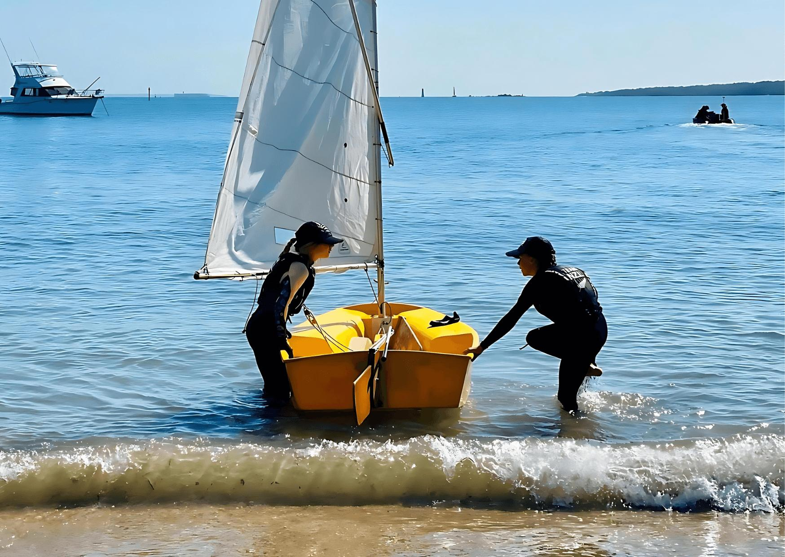
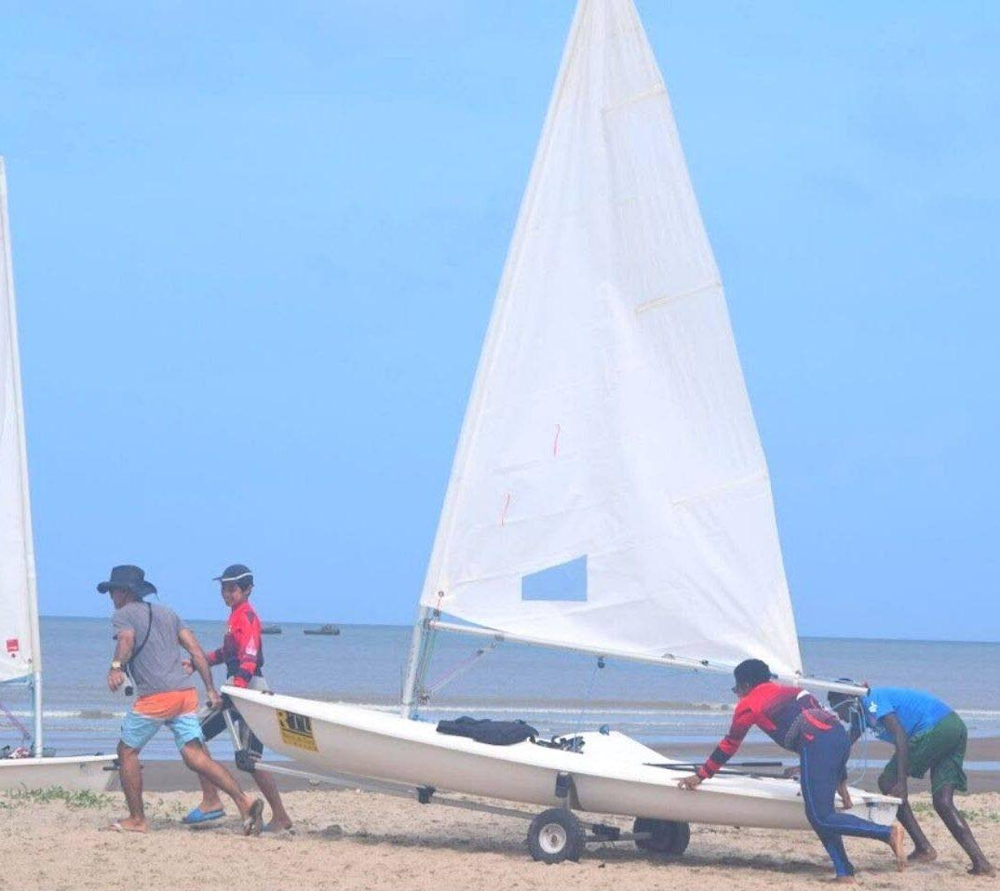
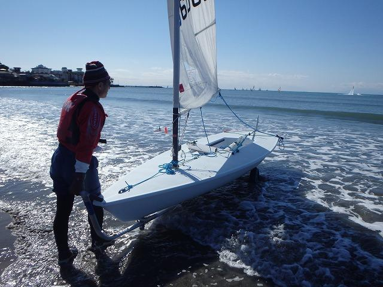
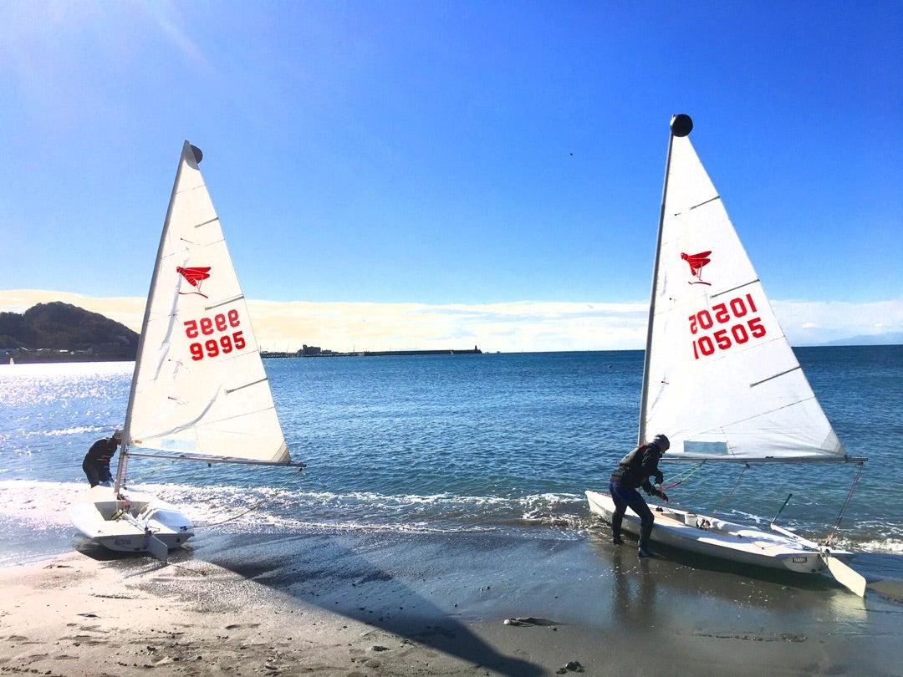

Module 9
Launching
Learn how to safely launch a dinghy from the shore and begin your sailing session with confidence.
Learning Objectives
After completing this lesson, you should be able to:
- Perform a pre-launch safety check.
- Prepare the dinghy for launching.
- Launch safely in light to moderate winds.
- Board the boat without losing control.
- Sail away smoothly from the shoreline.
Before You Launch
A successful launch begins with preparation. Before moving the boat into the water, make sure all equipment is properly rigged and secured. Check that the rudder, centerboard, mainsheet, and sail are ready for use.
Take a moment to observe the wind direction, wave conditions, and any nearby boats or swimmers. Choose a clear area with enough room to sail away safely.
Pre-Launch Checklist
🦺 Wear Your PFD
Ensure your personal flotation device is properly fitted before entering the water.
🌬 Check the Wind
Confirm the wind direction and strength. Beginners should launch only in suitable conditions.
⚓ Prepare the Boat
Raise the rudder, partially lower the centerboard if appropriate, and ensure the mainsheet runs freely.
👀 Look Around
Check for swimmers, other boats, shallow water, and obstacles before launching.
Launching Procedure
Walk the boat into water that is deep enough to protect the rudder and centerboard. Keep the bow pointed approximately into the wind so the sail remains under control.
- Push the boat into sufficiently deep water.
- Board the boat carefully while maintaining balance.
- Lower the rudder completely when it is safe to do so.
- Lower the centerboard to its normal sailing position.
- Trim the mainsail gradually and steer onto your desired course.




Common Beginner Mistakes
- Launching without checking the wind direction.
- Allowing the sail to fill before boarding.
- Forgetting to lower the rudder or centerboard.
- Standing up while boarding.
- Trying to sail away before the boat is fully under control.
Tips for a Smooth Launch
Take your time. A calm, organized launch is much safer than rushing. Keep the boat under control at all times, stay aware of your surroundings, and remember that every sailing session begins with a good launch.
Key Takeaways
- Preparation is the key to a successful launch.
- Always check the wind and surrounding area before launching.
- Board the boat carefully and maintain your balance.
- Lower the rudder and centerboard before sailing away.
- Begin every sailing session calmly and under control.